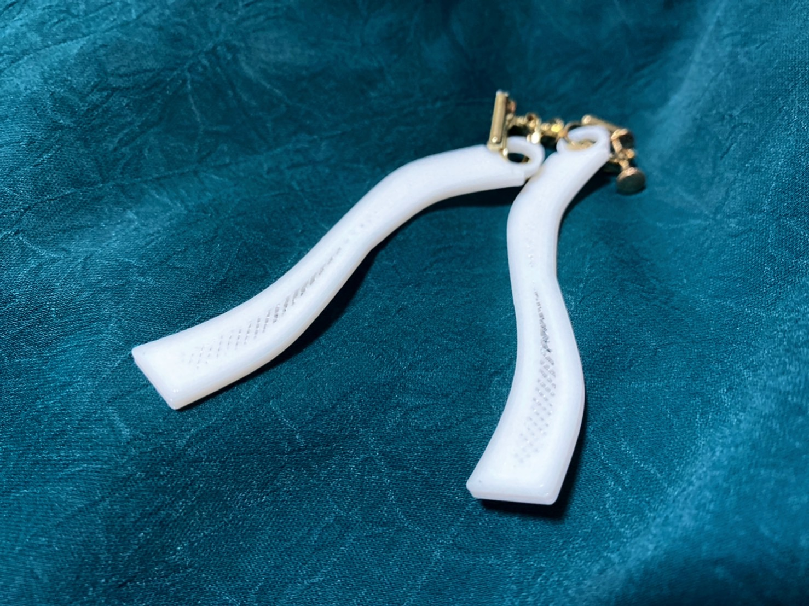

2021.10.15 ODP
アクセサリーの作成を開始しました。
シンプルな形のイヤリングを試しに出力してみました。綺麗に出力できましたが、
間違えてEnder3用のデータをanucubic mega-sで出力してまいました。偶然の産物なので
このイヤリングを正しいデータでも出力できるようにしていきたいと思います。
ODPの動画の制作を開始しました。
ODP全体を想定した動画
ODPのWebsiteを紹介する動画

シンプルな形のイヤリングを試しに出力してみました。綺麗に出力できましたが、
間違えてEnder3用のデータをanucubic mega-sで出力してまいました。偶然の産物なので
このイヤリングを正しいデータでも出力できるようにしていきたいと思います。
ODP全体を想定した動画
ODPのWebsiteを紹介する動画